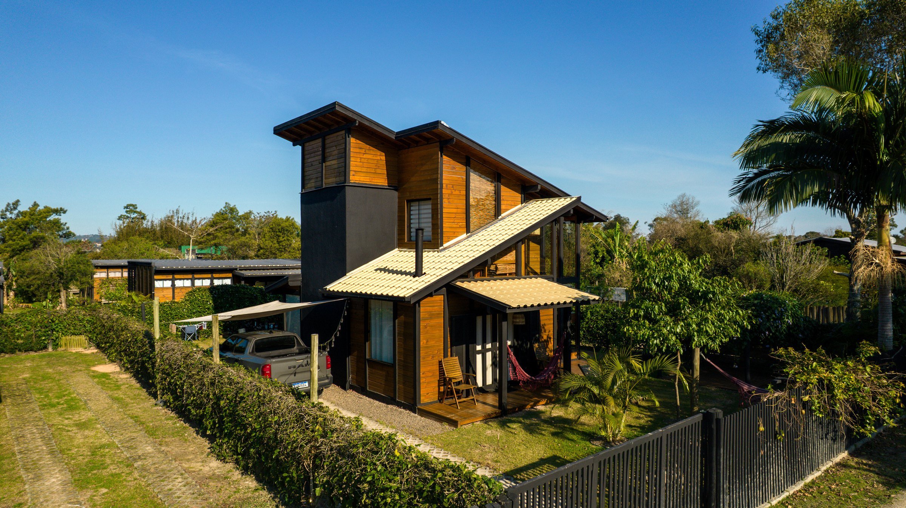
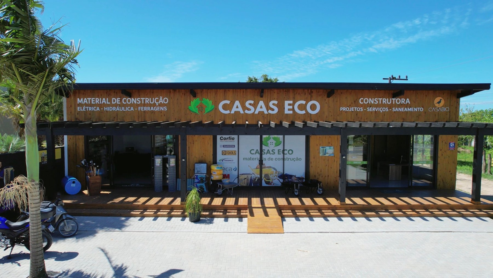
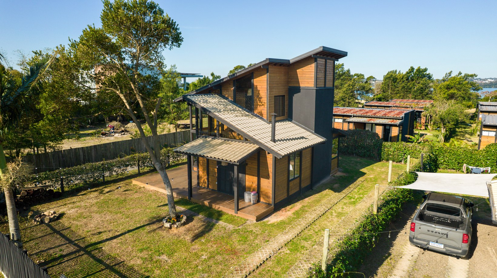
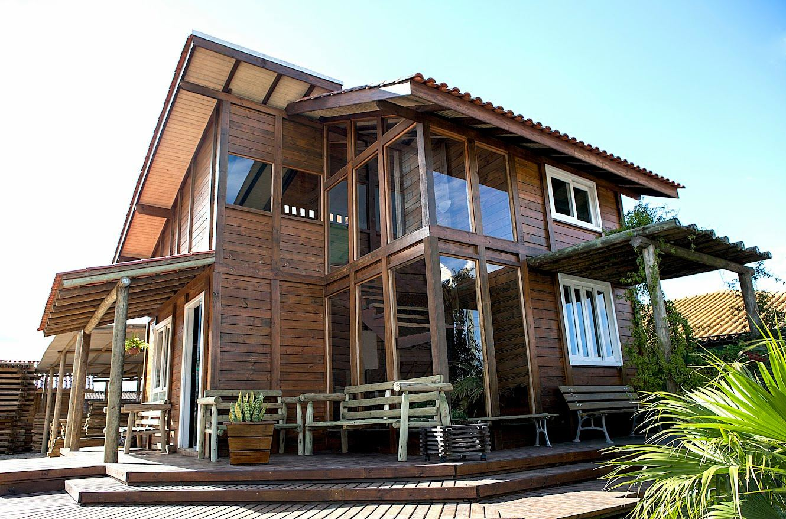
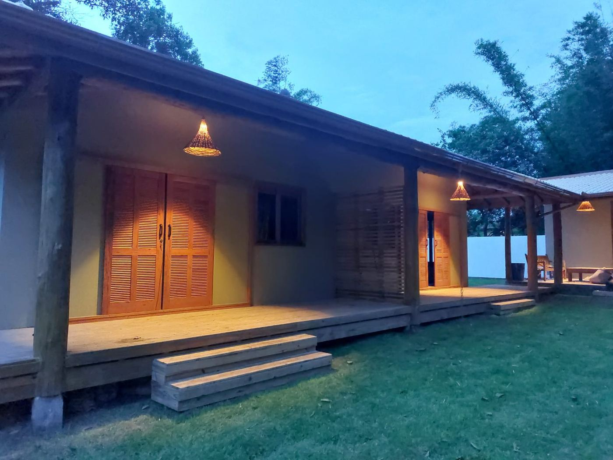
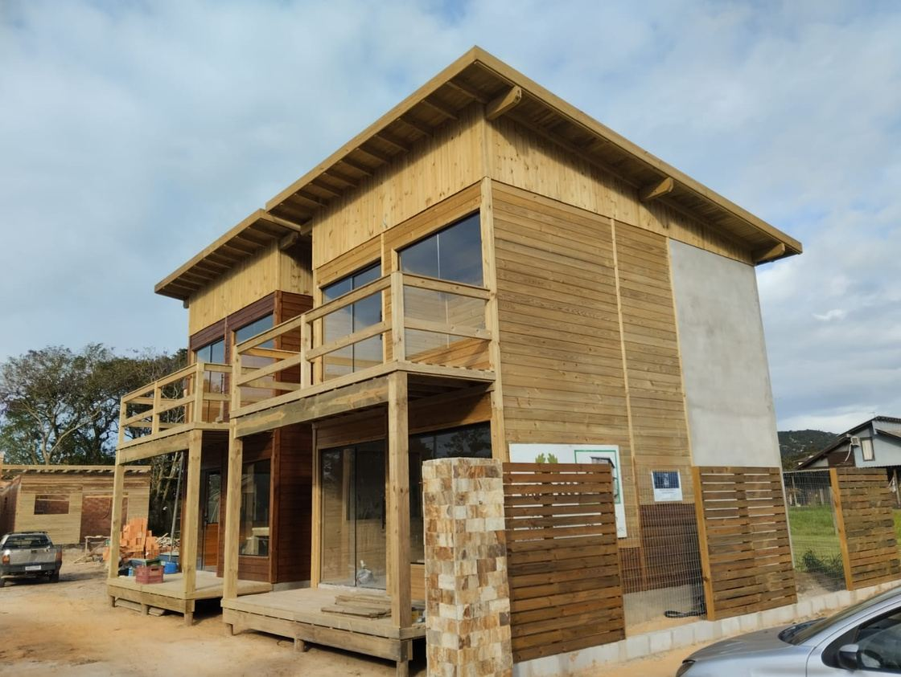
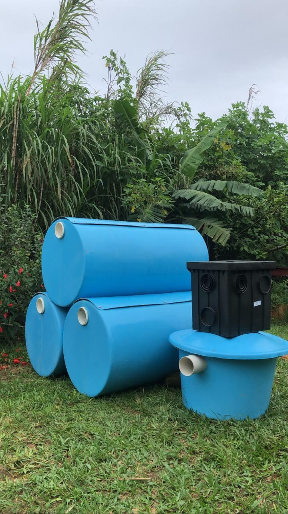

Chalé A-frame
Pronto em 30 dias.
Construído 100% com madeira ecologicamente correta, com pergolado, churrasqueira e área de lazer.
- Local
- Praia do Rosa
- Área
- 60,33 m²
- Prazo
- 30 dias
Sua casa, seu estilo, seu futuro. A natureza faz parte.

A Casas Eco oferece um ecossistema completo para a sua obra.
Como construtora, executamos projetos personalizados em madeira e alvenaria, decks e pergolados. Como material de construção, garantimos que itens essenciais de elétrica, hidráulica e ferragens tenham o padrão de qualidade que sua casa merece.
Ter a Casas Eco no seu projeto é ter um atendimento integrado, onde a expertise de quem constrói se une à curadoria de quem entende de materiais.


Mais de 150 obras realizadas na região
Mais de 20 anos no mercado
Showroom em Campo Duna, Garopaba. Segunda a sexta, 8h às 18h. Sábado, 8h às 12h.

Pinus tratado autoclavado, madeira ecologicamente correta. Escolha a parede e veja o corte.

Mais resistência, segurança e durabilidade para o seu lar.

Projetos que combinam madeira e alvenaria na mesma construção.
14 fotos. Clique ou toque em uma para ampliar.

Saneamento inteligente, ecológico e pensado para quem vive aqui.
A CasaBio, em parceria com a Casas Eco, oferece uma solução completa em saneamento ecológico. A estação de tratamento de esgoto ecológica trata até 98% do esgoto, em um sistema eficiente e compacto, ideal para as condições da região: solo, lençol freático e alta demanda da temporada.
Entregamos tudo do projeto à instalação completa, com acompanhamento técnico e responsabilidade ambiental.
Estamos muito satisfeitos com a qualidade do produto, a mão de obra e todo o processo da construção, desde a fundação até os retoques mais finos.
Cumpriram o acordado sempre se dispondo a resolver qualquer problema ou alteração proposta por mim na obra.